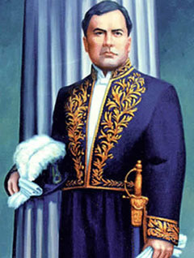
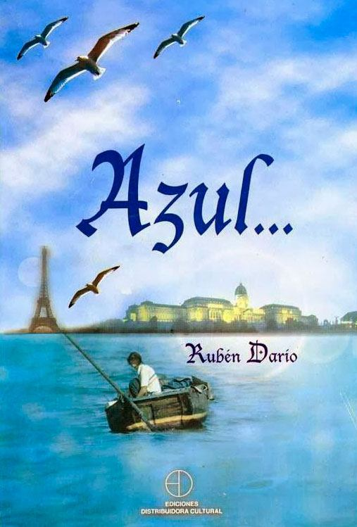
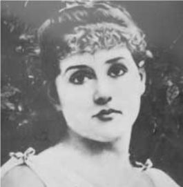
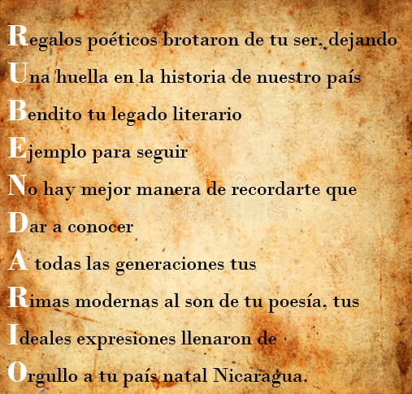

Biografía
Félix Rubén García Sarmiento, como fue bautizado, fue un poeta, periodista, diplomático nicaragüense y máximo representante del modernismo literario en la lengua española, que nació el 18 de Enero de 1867, en el pequeño poblado de Metapa, hoy conocido como Ciudad Darío en su honor, ubicado en el departamento de Matagalpa al Norte del país.

Se dice que el "Darío" lo adoptó debido a que era el nombre de su tatarabuelo, cuyos hijos e hijas eran conocidos como los y las Darío. El nombre llegó a ser tan popular que su bisabuela paterna lo utilizaba como apellido, lo mismo que su bisnieto, el padre de Rubén: Manuel Darío.

Desde muy pequeño se fue a vivir con su tía a la ciudad de León, y muy pronto mostró su genialidad, pues aprendió a leer a los tres años, teniendo famosas obras literarias como lecturas predilectas, consideradas muy complejas para su edad (Las Mil y Una Noches, Don Quijote de la Mancha, e incluso La Biblia). Además escribía numerosos versos para celebraciones regionales, y antes de sus 13 años, algunos fueron publicados en un periódico de la ciudad de Rivas llamado “El Termómetro”. Desde entonces, comenzó a ser conocido como “el poeta niño” en toda Nicaragua, y poco a poco en el resto de los países de la región centroamericana. A los 14 años se le invitó a participar en la redacción de un periódico llamado “La Verdad”, que era de oposición al gobierno de la época.
Debido a todo el reconocimiento alcanzado como “poeta niño”, algunos miembros liberales del Congreso Nacional sometieron a aprobación de su presidente una beca para mandarlo a estudiar en Europa, pero cuando en una fiesta celebrada en el Palacio Presidencial Rubén fue invitado para declamar sus versos, fue rechazado por el presidente Pedro Joaquín Chamorro, quien le dijo: “Hijo mío, si así escribes ahora contra la religión de tus padres y de tu patria, ¿qué será si te vas a Europa a aprender cosas peores?”. En lugar de Europa, se le propuso estudiar en la ciudad de Granada, pero Rubén terminó rechazando la oferta para no ofender a su pueblo adoptivo, León, debido a la antigua rivalidad política entre ambas ciudades. Así, Rubén resolvió seguir estudiando en el Instituto Leonés de Occidente.
En sus viajes a Managua, y siendo protegido por los miembros del Congreso pertenecientes al partido Liberal, conoció a grandes personajes de intelecto que le ayudaron a conseguir un trabajo en la Biblioteca Nacional, lo que le abrió las puertas para conocer más sobre la literatura castellana. Y así se quedó en Managua colaborando con su labor periodística en los diarios “El Ferrocarril” y “El Porvenir”. En esta noció a Rosario Emelina Murillo, con quien se caría varios años después.En 1882, cuando tenía 15 años, fue presentado al entonces presidente de El Salvador, Rafael Zaldívar, quien lo acogió en su país gracias a su evidente talento y potencial, y donde, aunque por poco tiempo, gozó de mucha fama y celebridad. Sin embargo, perdió el apoyo gubernamental, sufrió de viruela y regresó finalmente a Nicaragua para establecerse en Managua, donde empezó a trabajar en la secretaría presidencial. Además retomó su relación con Rosario Emelina Murillo, a quien en uno de sus poemas llamó “garza morena”, y la que le provocó una desilusión amorosa que lo llevó a irse del país.
En 1896, a los 19 años, partió hacia Chile, y con la ayuda de algunos amigos y del poeta y general salvadoreño Juan Cañas, se estableció en Valparaíso, donde gracias a sus cartas de recomendación recibió la protección y ayuda del escritor Eduardo Poirier. Logró para la época que el diario local “El Mercurio” publicara un escrito sobre la muerte del historiador y político chileno Benjamín Vicuña Mackenna, que había redactado apenas desembarcó en Valparaiso. Tiempo después, gracias a las influencias de Poirier, se trasladó a la ciudad de Santiago, donde se integró en la redacción del diario “La Época”, lo que dio paso a su incorporación a la joven intelectualidad de esa ciudad. Sin embargo, aunque entre la aristocracia tuvo que aguantar humillaciones y desprecios debido a su poco refinamiento, se hizo muy amigo del hijo del entonces presidente de la república, Pedro Balmaceda Toro, quien lo introdujo a la literatura francesa y le dio su total apoyo desde el momento en que lo conoció. En 1887, gracias a él y a Manuel Rodríguez Mendoza, Rubén pudo publicar por primera vez su libro “Abrojos”.
Hasta antes de eso, Rubén Darío ya había intentado publicar en dos ocasiones unos libros que no vieron la luz en el momento en que él lo esperaba. En el caso del primero, su publicación tuvo que esperar 50 años después de su muerte.
En 1888, con la ayuda de sus protectores, publicó la primera edición de su gran obra titulada “Azul”, que se convirtió en el punto de partida para el cambio en la literatura castellana de la época. Rubén Darío nunca había estado en Europa, pero su libro llegó al viejo mundo, hasta las manos del crítico literario español Juan Valera, quien publicó en el diario madrileño “El Imparcial” unas cartas dirigidas al poeta, en las que lo reconoce como "un prosista y un poeta de talento". Este reconocimiento aportó en grande a la fama del poeta nicaragüense, pues también fueron publicadas en la prensa chilena y en la de otros países latinoamericanos.
Para entonces estaba trabajando por influencias del poeta Eduardo de la Barra, como redactor en “El Heraldo”, un diario comercial y político de Valparaíso, del que fue despedido por estar sobre-calificado para escribir en éste. Al quedarse sin puesto de trabajo y entregado a una vida de fiestas e “inquirida bohemia”, como él mismo asegura en su autobiografía, llegaron tiempos de escasez que le hicieron contemplar un posible regreso a su tierra. Sin embargo, antes de embarcarse para Nicaragua, en 1889 conoció a quien se convertiría en un gran amigo y protector: José Victoriano Lastarria, escritor y político chileno que junto al General Mitre, poeta y militar argentino, le ayudó a conseguir un nuevo trabajo, al mismo tiempo que alcanzaba uno de sus mayores deseos: ser corresponsal del diario de mayor difusión de la época: “La Nación” de Bueno Aires.
Poco después regresó a Nicaragua, donde fue recibido en León con gran alegría y admiración, aunque sólo se quedó un tiempo breve, pues partió hacia El Salvador, donde fue nombrado director del diario “La Unión”, cuyo nombre hacía alusión a la unificación de los países centroamericanos, causa de la que el presidente salvadoreño de entonces, General Francisco Menéndez, era activo promotor. En este trabajo conoció a muchos personajes de la política y literatura de la época, sin dejar atrás su trabajo como corresponsal del diario argentino.
El 22 de Junio de 1890 contrajo matrimonio con Rafaela Contreras, hija del famoso orador hondureño Álvaro Contreras. Al día siguiente de su boda se produjo un golpe de Estado contra el entonces presidente salvadoreño, que fue dirigido por el General Carlos Basilio Ezeta, quien había sido uno de los invitados a su ceremonia de boda. Tras los acontecimientos, Darío se marchó solo rumbo a Guatemala, donde después de una charla con el presidente Manuel Lisandro Barillas, publicó en el diario “El Imparcial” un artículo con el título de “Historia Negra”, en el que condenaba la traición recién ocurrida. Este artículo también fue publicado en “La Nación”.
En 1890, por disposición presidencial se le encargó la dirección y propiedad del diario “El Correo de la Tarde”, que seis meses después cesó sus publicaciones tras perder el respaldo económico del gobierno. Sin embargo, su trabajo ahí le sirvió para conocer gente y hacer buenos contactos; y acabada su labor se dirigió junto a su esposa hacia Costa Rica, donde además de colaborar en varios diarios, el 21 de Noviembre de 1891 nació su primer hijo: Rubén Darío Contreras. Para entonces, él y su familia pasaban por una etapa económica incierta, por lo que decidió regresar a Guatemala para buscar alternativas, dejando a su esposa e hijo.

En 1892, siendo una figura nacional, el gobierno de Nicaragua lo envió a España para asistir a la celebración del Cuarto Centenario del descubrimiento de América. Durante su viaje en barco hizo escala en La Habana, Cuba, donde conoció a famosos escritores de la época como Julián del Casal, Aniceto Valdivia y Raoul Cay. Después, siguió su viaje hacia España, y una vez ahí se estableció en Madrid, donde tuvo la oportunidad de socializar con poetas, novelistas, eruditos y políticos de renombre. En Noviembre de ese mismo año regresó a Nicaragua. En su viaje, hizo una breve parada por Colombia, en donde con ayuda de Rafael Núñez tuvo la oportunidad de contactar a Miguel Antonio Caro, entonces presidente, para ver las posibilidades de ocupar el puesto de cónsul en España, sabiendo que en Nicaragua no iba a tener muchas más oportunidades.
Estando en su país, como era de esperarse, no encontró gran apoyo gubernamental y además recibió una noticia dolorosa: un telegrama proveniente de San Salvador en el que se le anunciaba la gravedad de su esposa, y poco tiempo después, la confirmación de su muerte, en Enero de 1893. El poeta no pudo dirigirse a El Salvador, por rencores con el General Ezeta, y así su hijo quedó en manos de su cuñada y su esposo, quienes se encargaron de su educación. Toda la situación le llevó al alcoholismo.
Poco tiempo después, Rubén regresó nuevamente a sostener una relación con Rosario Emelina Murillo, cuya familia le obligó a casarse. En Abril de ese año, viajó a Panamá, donde recibió la noticia de que el presidente colombiano, Miguel Antonio Caro, lo había nombrado cónsul honorífico en Buenos Aires. Esto, junto a su trabajo como corresponsal de “La Nación”, le permitió viajar por diferentes partes del mundo: en Nueva York conoció al poeta cubano José Martí, y en París sufrió el desencanto de la ciudad que tanto anhelaba conocer y de sus admirados autores: Verlaine y Moreas, por mostrar poco interés en el poeta.
En 1894 regresó a América, para residir un tiempo en Buenos Aires, desde donde junto al oriundo Leopoldo Lugones y el boliviano Ricardo Jaimes Freyre, lideró el Movimiento Modernista. En el diario publicó artículos sobre los escritores que él había conocido y leído, y había considerado raros. Su obra “Los Raros” está inspirada en ellos.
En Buenos Aires, mientras su esposa estaba en Panamá, Rubén llevaba una vida de fiestas, pues su trabajo era “honorífico” y le exigía poco. En Octubre de 1895, tras la muerte de Rafael Núñez, el gobierno colombiano suspendió su consulado en esta ciudad, pero sus amigos le ofrecieron la oportunidad de colaborar con los diarios “La Tribuna”, “La Prensa” y “El Tiempo”, mientras su trabajo como corresponsal de “La Nación” continuaba siendo su principal fuente de ingresos. Sin embargo, no le era suficiente, y el ya famoso poeta consiguió trabajo como secretario personal de Carlos Carlés, director de “Correos y Telégrafos”. No obstante, siguió produciendo obras, y en 1896, con la aportación económica del dueño del diario “El Tiempo”, Carlos Vega Belgrano, publicó “Prosas Profanas”, una de las obras máximas del Modernismo literario, por utilizar elementos sintácticos sin nexos formales, enriquecer el vocabulario con préstamos del francés y empleo de neologismos, anglicismos, arcaísmos y otros recursos innovadores.
En varias ocasiones, Rubén pidió al gobierno de Nicaragua que le enviase a Europa con un cargo diplomático, pero sólo logró el viaje hasta 1898, cuando el diario “La Nación” lo envió como corresponsal en Madrid, España, para informar sobre la situación ocurrida entre ese país y Estados Unidos.
Llegó nuevamente a Europa el 3 de Diciembre de 1898. Donde en Madrid, poco tiempo después, en1899, conoció en Casa de Campo a Francisca Sánchez, una campesina analfabeta, quien fue una gran inspiración para el poeta, además de convertirse en la compañera de sus últimos años de vida. Ahí también logró bastante aceptación entre los jóvenes que defendían el Movimiento Modernista, pudiéndoles inculcar la libertad intelectual y el personalismo artístico. Entre éstos estaban Juan Ramón Jiménez, Ramón María del Valle-Inclán y Jacinto Benavente.
Gracias a su trabajo como corresponsal, Darío pudo conocer y escribir sobre acontecimientos de la época que sucedían en diferentes países europeos a los que viajó. En muchos casos, sus impresiones quedaron plasmadas en algunos libros, tal como “España Contemporánea” y “Peregrinaciones”.
A partir de 1900 se estableció en París y logró cierta estabilidad. En 1901 publicó la segunda edición de “Prosas Profanas”. Ese año, aún casado con Rosario Emelina Murillo, Francisca tuvo una hija del poeta, que murió de viruela poco después del parto, sin que éste llegara a conocerla. En 1903 fue nombrado cónsul de Nicaragua en esa ciudad, lo que le trajo mejores condiciones económicas y le dio más oportunidades de viajar y seguir conociendo reconocidos intelectuales. En esa época nació su segundo hijo con Francisca, pero también murió a muy corta edad.
En 1905 regresó a España como representante del gobierno nicaragüense en una delegación diplomática, y ahí publicó su libro “Cantos de Vida y Esperanza”, probablemente una de sus más aclamadas producciones. En 1907, volvió a Nicaragua para conseguir su divorcio de Rosario Murillo, quien en repetidas ocasiones se había negado a dárselo a no ser que el poeta le pagara una compensación económica superior a lo que éste consideraba justa. Rubén decidió llevar el caso a los tribunales, pero no tuvo éxito. Cuando quiso regresar a París se vio retrasado por causas económicas, y después de varias gestiones, durante el gobierno de José Santos Zelaya, fue enviado a Madrid como embajador. Sin embargo, cuando Zelaya fue derrocado, Darío se vio obligado a renunciar a su cargo y volvió a París para seguir escribiendo y publicando.
Para esta etapa de su vida, Rubén Darío sufría de los efectos del alcoholismo, que le causaba repetidas crisis psicológicas y afectaciones a su salud física y mental; tanto, que en 1910, estando en La Habana y bajo los efectos del alcohol, intentó suicidarse.
En 1912 llevó a cabo una gira por varios países de Latinoamérica, gracias a su trabajo como director de las revistas “Mundial” y “Elegancias”, de los empresarios uruguayos Alfredo y Rubén Guido. Fue en esta época que el poeta decidió escribir su autobiografía y además publicó “Historia de mis libros”, donde se puede conocer mejor su evolución literaria.
Después de esto, en 1913 partió nuevamente a París, haciendo escala en Mallorca, donde aunque siguió escribiendo, su salud se vio nuevamente afectada por los efectos del alcoholismo. En Enero de 1914 llegó a París, pero al estallar la Primera Guerra Mundial decidió regresar a América para defender el pacifismo para las naciones americanas, despidiéndose para siempre de Francisca.
A su regreso pasó por Nueva York y Guatemala, y el 7 de Enero de 1916 llegó a León, su ciudad de infancia, donde menos de un mes después falleció, luego de haber sido intervenido quirúrgicamente. Sus restos están conservados en la Catedral de la ciudad de León, Nicaragua.
En la actualidad Rubén Darío es uno de los personajes más celebres de la historia de Nicaragua; es el máximo representante de la grandeza literaria del país, y trascendió fronteras ganándose el título de “Padre del Modernismo”. Sus temas fueron siempre inspirados por sus precoces sentimientos. Alcanzó la madurez como escritor al viajar por el mundo, conocer lo que siempre soñó y desencantarse de eso que siempre añoró. Sus numerosos viajes, su instinto erótico, sus repentinos enamoramientos, su libertad de pensamiento, la tragedia de la muerte de su primera esposa, su refugio en el alcohol, junto con su intelecto innato, lo convirtieron en lo que hoy representa.
Rubén Darío es recordado en toda Nicaragua; muchas calles, parques, colegios y edificios llevan el nombre de este poeta, así como varios museos y monumentos, que se han convertido en parte de una honra perpetua a su vida y obra.
Acrostico a Ruben dario

Amores de Ruben dario
- Rafaela Contreras
- Rosario Emelina murillo
- Francisca Sánchez
Países a los que ha viajado Rubén Dario
- Chile
- El salvador
- Guatemala
- Panamá
- Costa Rica
- Cuba
- España
- Francia
- Alemania
- Argentina
- Bélgica
- Brasil
- Estados unidos
- Colombia
Obras capitales